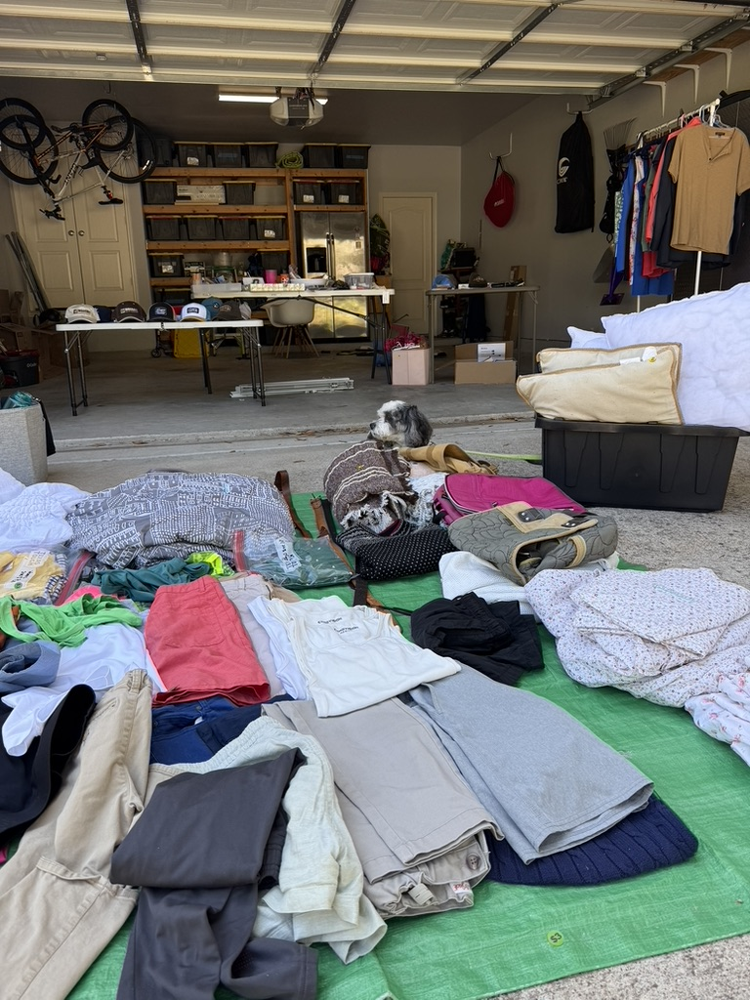

You know the drill.
It's the middle of the workday. I should be at my desk. Instead I'm in the kitchen unloading the dishwasher, wiping the counters, folding the towels I just spotted, and somehow forty-five minutes have gone by.
Somewhere between the dishwasher and the towels, it hit me: these are exactly the kinds of things I could hire Jenny Help Me to do while I actually get my work done.
And then there was the community garage sale, one week away. It was an opportunity I didn't want to let pass me by. Clearing out my house and simplifying for more peace of mind is one of my missions. Whenever I come across old to-do lists, it's on there, year after year.
I finally realized I needed help to actually do it, and the garage sale gave me a deadline. Just what I needed!
The alternative was what I'd done in years past: the night before, grabbing random stuff and throwing it on tables, with no plan and no prices, hoping for the best.
Not this year. So I reached out.
Was it worth paying for?
I'll admit I hesitated. Paying someone to help me get rid of things felt a little counterintuitive. Did it even make financial sense? I'd be spending money to make money on a pile of stuff I didn't want anymore.
Spoiler: I still came out ahead. But the money turned out to be the smaller part of the story.
Meet Jackie (who, it turns out, lives down the street)
Jenny sent Jackie. Jackie, it turns out, lives down the street from me. We had never met.
We hit it off right away, and she came in ready to work. She didn't just haul boxes. She helped me make decisions, which was the part I'd been dreading. Together we sorted everything into:
- Let it go for free. Not worth the effort of selling.
- Sell it online. Better-value items for the local buy-and-sell Facebook group or Facebook Marketplace.
- Garage sale. Everything else.
Then she priced all the garage sale items. She checked in to see how I felt about her prices, but honestly, I gave her free rein. She was better at it than I would have been.
She came for a couple of hours two days in a row. By Saturday morning, I was ready to go. There was no night-before scramble this year. Everything was sorted, priced, and ready.

And she didn't disappear after the sale. Jackie checked in afterward and offered to take whatever didn't sell to donation, which saved me the last step I always put off.
What it was really worth
Yes, I made some money at the garage sale. But the real win was the mental space it freed up.
I didn't have to make a hundred tiny decisions alone, price every coffee mug, or figure out the donation run. I had a partner who was organized and made the whole thing feel easy.
It was also affordable, which mattered more than I expected. I wasn't agonizing over the price or feeling guilty about getting help. That relief was worth it on its own.
Not my first time, actually
This wasn't my first time calling Jenny Help Me. A couple of years ago, I was getting ready for my daughter's 21st birthday party and knew I'd need help getting the house ready and decorated.
The helper that day handled all of that. Then she also organized my linen closet and made a Goodwill run with my donations. I ended up with a house that was ready for a party and had more space in it.
That's what I love about this team: the helpers come in ready to do anything. And in my experience, they've been extremely easy to work with every time.
What's next
This won't be my last project with them. I've already talked to Jackie about my long-term vision for my home, and I'd happily keep working with her. But honestly, I'd be just as comfortable with whoever Jenny sends. Two projects, two different helpers, and both were excellent.
Knowing I have a team to help me actually see my vision through is a huge relief.
Full circle
About a week after the garage sale, I was at H-E-B, and there was Jackie.
We stopped right there in the aisle and talked for a few minutes, mostly about next steps for my project. It was a small, ordinary moment, and it made my whole day.
That's exactly why I started the Porch Project.
I wanted more of those little encounters: running into someone you know from your own community, getting a smile from someone who recognizes you. A two-minute conversation gives you a little feel-good boost and reminds you that you're part of something bigger than your own to-do list.
Before Jenny Help Me, Jackie was a neighbor I had never met. Now she's someone I stop to talk to at H-E-B. That's what this project is about. Our neighbors are right down the street, and sometimes we just need a reason to meet them.
More about Jenny Help Me
Jenny Help Me is a team of experienced local moms, which Jenny calls her "middle-aged babysitters club," helping busy families with the everyday stuff:
- Around the house: laundry, tidying, dishes, restocking the fridge and pantry
- Organizing projects: decluttering, selling, and donating (hi, that was me)
- Errands: groceries, prescriptions, returns, curbside pickups
- Meal prep and packing lunches
- Rides and kid carpools, plus discounted luxury SUV rides through their partner Luan Drivers
- House manager: ongoing help keeping the whole household running
- Selling or renting support: showing prep, move-out cleans, and even watching your dog during open houses
Their tagline is Consider it done. In my experience, that's accurate.
If you want to book
Jenny Help Me serves Steiner Ranch, Riverplace, Four Points, and nearby, by appointment. Their phone, email, website, and everything else you need to get in touch are on their Porch Project directory listing.
Pricing (at time of writing): In-home help and errands start at $28/hr (plus mileage for errands). Organizing projects like mine are $35/hr. A house manager starts at $40/hr.
See Jenny Help Me in the directory
Real experiences, real opinions, a little AI help with the writing.